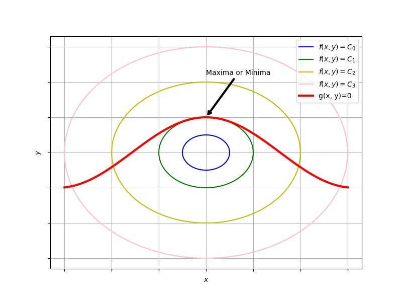

问题
圆柱体积恒定，求表面积最大值。
也就是说，在 \(V = \pi r^2h\) 的约束下，求函数 \(A = 2\pi r^2 + 2\pi rh\) 的最小值。
求解
约束 \(V = \pi r^2h\) 在变量 \(r-h\) 构成的直角坐标下，是一条线。
所求的量 \(A = 2\pi r^2 + 2\pi rh\) 在\(r-h\) 构成的平面内，当 \(A\) 取不同的值时，对应不同的线，所以它就对应一簇线，每一条线上的所有的点都对应 \(A\) 取相同的值。
线 \(V = \pi r^2h\) 与很多条 \(A = 2\pi r^2 + 2\pi rh\) 相交
要做的就是在 \(V = \pi r^2h\) 这条线上找一个点，这个点是和某一条 \(A = 2\pi r^2 + 2\pi rh\) 的交点，而且再也找不到另一个点与另一条更大的 \(A = 2\pi r^2 + 2\pi rh\) 相交。
所以这时两条线应该相切，也就是它们的垂线是平行的，也就是
\[ \frac{\partial}{\partial r}（2\pi r^2 +2\pi r h） =\lambda \frac{\partial}{\partial r}（ \pi r^2h） \] \[ \frac{\partial}{\partial h}（2\pi r^2 +2\pi r h） =\lambda \frac{\partial}{\partial h}（ \pi r^2h） \]可得
\[ \lambda = 2r \] \[ h =2r \]一般形式
求二维函数 \(f(x,y)=0\) 在约束 \(g(x,y)=0\) 下的极值. 那么, \(f(x,y)\) 的等高线与约束相切的点就是极值. 如图

高维可以做类似的推广.
后续补充
画图
例题
一般形式